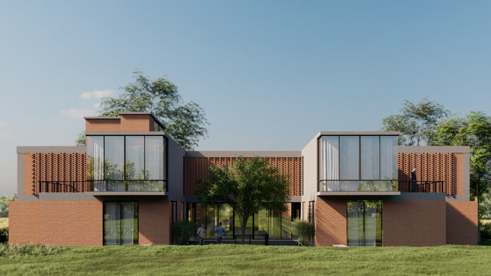

The Farm House cum Weekend Home in Manesar occupies particularly interesting position in contemporary residential design: the country retreat aspiring to architectural significance while maintaining practical functionality for leisure and relaxation. The challenge involved creating space working genuinely for weekend occupation while achieving visual distinction and thoughtful design worthy of serious architectural attention.
Designed to embrace rural setting, the project leveraged site's natural advantages, open landscape, mature plantings, topographic variation, through responsive design. The design strategy respected these assets rather than imposing predetermined form regardless of conditions. The 5,100 sq.ft. footprint was organized maximizing connections while establishing clearly defined interior/exterior relationship. This required thoughtful site planning anticipating how residents would occupy space across seasons and different activity patterns throughout year.
The material palette deliberately avoided pastoral cliché or nostalgic romanticism often found in country houses. Exposed brickwork and raw concrete slabs created visual weight and textural richness without attempting historical reproduction or period pastiche. Full-height glazing established visual continuity between interior and landscape without fragile transparency typical of contemporary glass systems. This combination of raw materiality and transparent connection created contemporary country aesthetic distinctly different from traditional farmhouse typologies.
The design confronted fundamental question: what constitutes authentic contemporary country residence? The answer rejected both preservation impulse (recreating historical forms) and purely contemporary minimalism (treating location as irrelevant). The design embraced honest material expression responding directly to site conditions and contemporary expectations about comfort and livability.
The open-plan interior organization enhanced spatial fluidity and functional flexibility. Rather than rigid room-based zoning typical of traditional houses, the layout allowed spaces serving multiple uses across different times and seasons. The arrangement acknowledged weekend rhythm differs from daily urban occupation patterns and requirements.
Large glass façades invited natural light and panoramic views while providing weather protection. The relationship between raw materials and refined interiors, exposed structure paired with comfortable furnishings, created atmosphere of sophisticated simplicity. This balance proved critical; raw materials alone create barren spaces while finished interiors in country settings appear inappropriate and disconnected from surroundings.
The farmhouse exemplifies how rural residential projects can engage serious architectural thinking. By respecting site conditions, employing material authenticity, and prioritizing spatial experience over decorative narrative, the project created country retreat functioning as both personal sanctuary and legitimate architectural achievement worthy of serious design attention.

Project details
Materials
Exposed brickwork, raw concrete slabs, full-height glass, timber finishes
Floor area
5100 sqft
Construction period
2023-2024